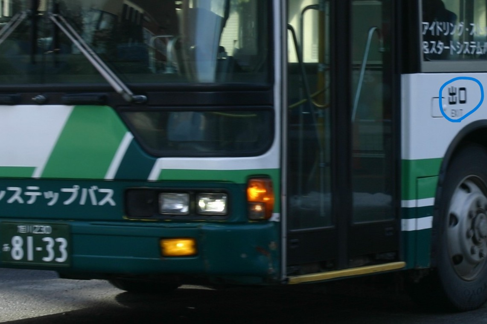

旭川230あ・8133
道北バスの旭川230あ・8133号車です。
この車両は愛知県の公営事業者から移籍してきました。
特徴としては、車内の座席配置が初期のノンステップ車両特有の後輪のホイールハウス上座席が対面となっています。
道北バスへは同仕様の車両が他にも移籍しましたが、この車と896号車は重工クーラーが白色に塗装されています。
また、過去には黄色ベースの全面広告車だったため、広告解除後も希望ナンバーで登録されています。
更に、この車両は緑色ベースの後面広告があります。
896号車と判別点は、前扉付近の出口表記の位置が蓋の後ろ側になっています。
型式:KC-MP747M
年式:2000年式
元の活躍エリア:中部地方
↓8133号車の出口表記
↓896号車の出口表記